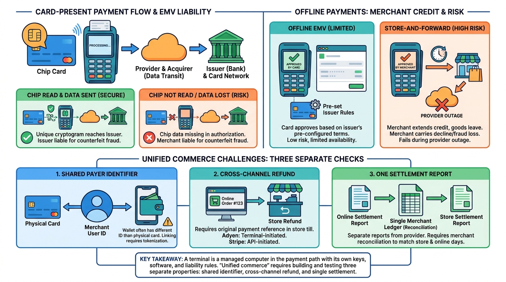

Part II — ACCEPTANCE: Getting to Yes
The Card in the Room: Terminals and Unified Commerce
AI-assisted: researched and written with Claude Code; illustrations generated with Gemini. How this works

Image generated by Google Gemini (gemini-3-pro-image-preview)